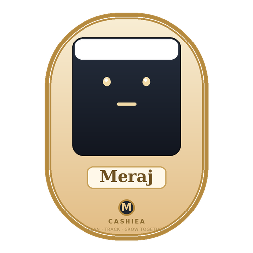
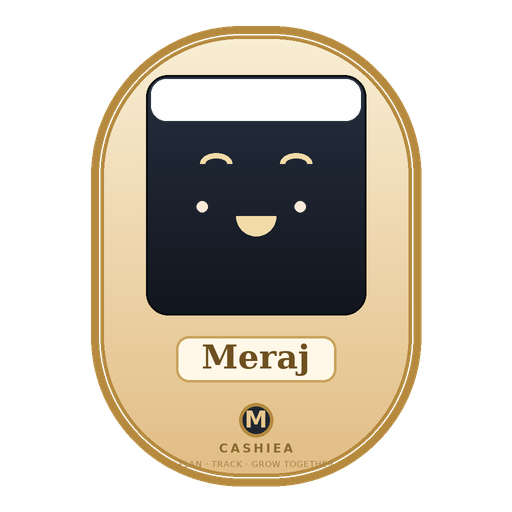
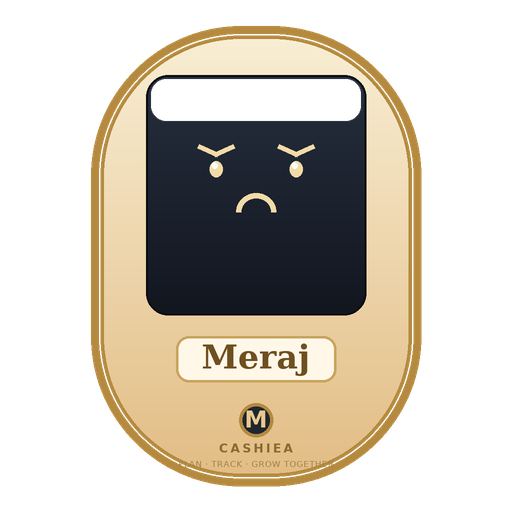
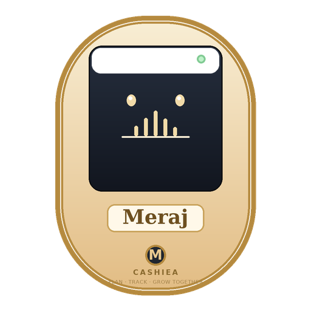
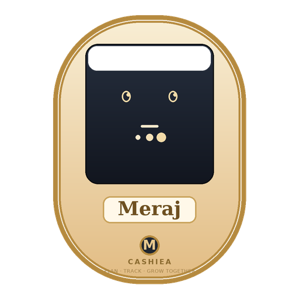
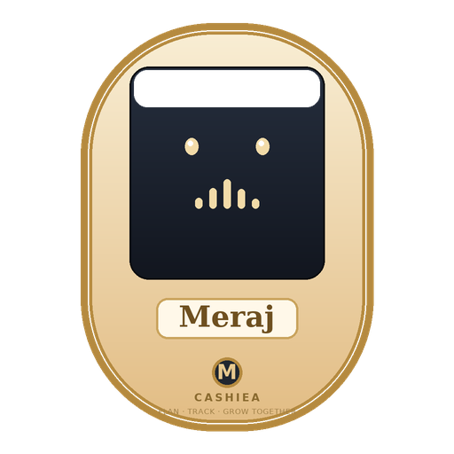

Six face-state variants of the SAME base render — only the screen-face content changes.






Same cream/gold body, same angle, same "Meraj" display panel, "M" speaker and "CASHIEA · PLAN TRACK GROW TOGETHER" branding on every variant — only the screen-face swaps, so state changes read as one continuous device.